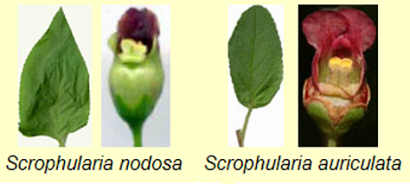
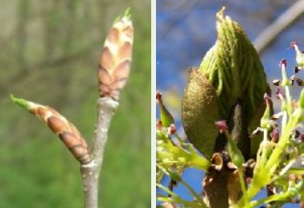
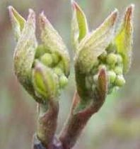
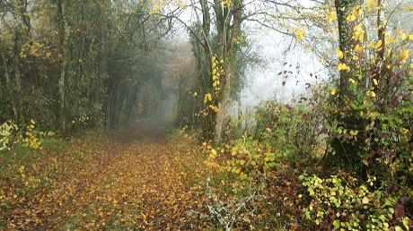

Les feuilles
Leurs formes...parfois surprenantesLeur importanceLeur complexité
L'importance des feuilles
Les feuilles sont importantes à plus d'un titre même si leurs formes peuvent varier sous l'influence de nombreux facteurs écologiques ou biologiques auxquels elles s'adaptent, contrairement à la forme des fleurs qui est plus stable.
Elles peuvent nous aider à reconnaître une plante, en faisant la différence entre deux espèces proches, comme par exemple ces deux scrophulaires, Scrophularia nodosa et S. auriculata.

Ces fleurs, feuilles métamorphosées, nous invitent donc à observer les feuilles au Printemps dès leur bourgeonnement :


Les feuilles ne seraient-elles pas plus fiables que les couleurs des fleurs
pour reconnaître certaines plantes ?
En automne, ne ramassez pas les feuilles mortes ! titrait la LPO en 2024.
 Feuilles d'Automne - Isabelle Jaccard - Poésie
Feuilles d'Automne - Isabelle Jaccard - Poésie

Automne 2018 - Photo © Claire Martin-Lucy
 Claude Debussy-Prelude No.2 : Feuilles mortes
Claude Debussy-Prelude No.2 : Feuilles mortes
Une litière de feuilles en automne
appartient-elle à l'arbre seul dont elle provient,
ou ne relève-t-elle pas aussi déjà du sol auquel elle va se mêler ? J.Tassin
Ce sol dont les richesses sont insoupçonnées.
 Bechara El Khouri, Sérénade pour orchestre à cordes No. 1, Op. 10. Feuilles d'automne
Bechara El Khouri, Sérénade pour orchestre à cordes No. 1, Op. 10. Feuilles d'automne